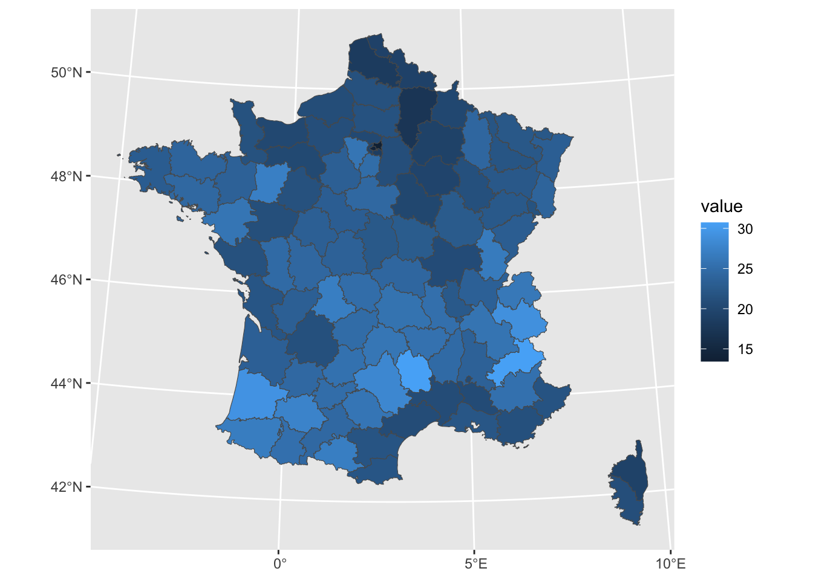
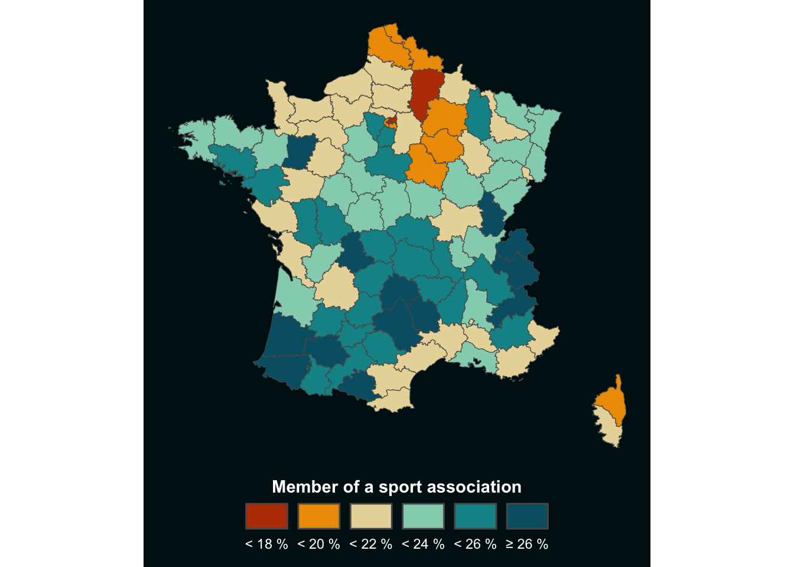
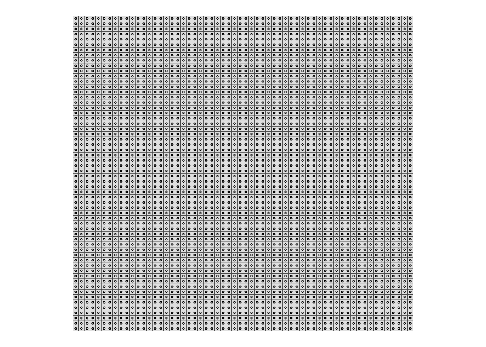
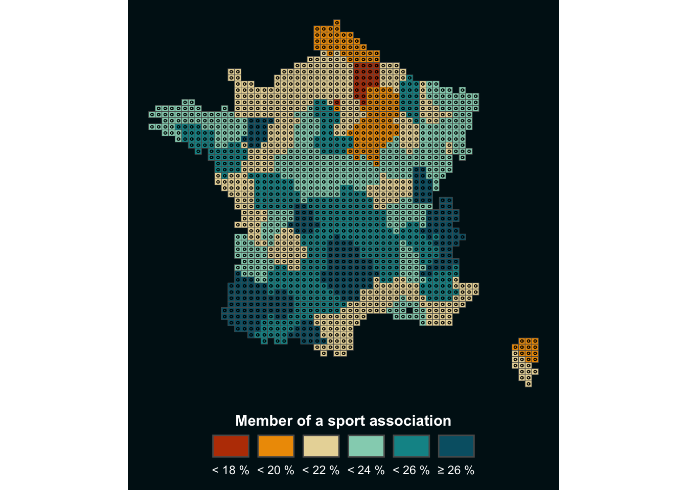

1. Load data
To create our Lego map, we will need these packages:
library(tidyverse)
library(sf)
We will also need a base map with the data, which may be downloaded at
this link
or loaded directy in R as shown below:
map<-sf::read_sf('https://github.com/BjnNowak/lego_map/raw/main/data/france_sport.gpkg')
Data for this map come from the
Observatoire des Territoires.
2. Make choropleth
In this map, the “value” column contains the percentage of members of
a sports association by department, which can be used to make a
choropleth:
ggplot(map, aes(fill=value))+
geom_sf()

Before moving further, we will just make a few modifications to this
map to transform the gradient into value classes and plot the results
in an appropriate way:
# Create classes
clean<-map%>%
mutate(clss=case_when(
value<18~"1",
value<20~"2",
value<22~"3",
value<24~"4",
value<26~"5",
TRUE~"6"
))
# Set color palette
pal <- c("#bb3e03","#ee9b00","#e9d8a6","#94d2bd","#0a9396","#005f73")
# Set color background
bck <- "#001219"
# Set theme
theme_custom <- theme_void()+
theme(
plot.margin = margin(1,1,10,1,"pt"),
plot.background = element_rect(fill=bck,color=NA),
legend.position = "bottom",
legend.title = element_text(hjust=0.5,color="white",face="bold"),
legend.text = element_text(color="white")
)
# Make choropleth
ggplot(clean, aes(fill=clss))+
geom_sf()+
labs(fill="Member of a sport association")+
guides(
fill=guide_legend(
nrow=1,
title.position="top",
label.position="bottom"
)
)+
scale_fill_manual(
values=pal,
label=c("< 18 %","< 20 %","< 22 %","< 24 %","< 26 %", "≥ 26 %")
)+
theme_custom

3. Convert to Lego style
This choropleth is already looking better, but we can give it a more
original style: the Lego-style!
First steps of the data preparation are: - create a grid over the map
area, which will then be the boundaries of the bricks ; - extract the
centroid of each cell, which will then be the center of the brick.
# Make grid
grd<-st_make_grid(
clean, # map name
n = c(60,60) # number of cells per longitude/latitude
)%>%
# convert back to sf object
st_sf()%>%
# add a unique id to each cell
# (will be useful later to get back centroids data)
mutate(id=row_number())
# Extract centroids
cent<-grd%>%
st_centroid()
# Take a look at the results
ggplot()+
geom_sf(grd,mapping=aes(geometry=geometry))+
geom_sf(cent,mapping=aes(geometry=geometry),pch=21,size=0.5)+
theme_void()

You can see where we are going with this, right?
But in order to project the data onto the map, we now need
to perform an intersection between the centroids and the base
map. We will then bring this information back into the grid using the
unique identifier ‘id’ we created in the previous step.
# Intersect centroids with basemap
cent_clean<-cent%>%
st_intersection(clean)
# Make a centroid without geom
# (convert from sf object to tibble)
cent_no_geom <- cent_clean%>%
st_drop_geometry()
# Join with grid thanks to id column
grd_clean<-grd%>%
#filter(id%in%sel)%>%
left_join(cent_no_geom)
We are now ready to make the map, combining what we saw with the
choropleth and the grid above!
ggplot()+
geom_sf(
# drop_na() is one way to suppress the cells outside the country
grd_clean%>%drop_na(),
mapping=aes(geometry=geometry,fill=clss)
)+
geom_sf(cent_clean,mapping=aes(geometry=geometry),fill=NA,pch=21,size=0.5)+
labs(fill="Member of a sport association")+
guides(
fill=guide_legend(
nrow=1,
title.position="top",
label.position="bottom"
)
)+
scale_fill_manual(
values=pal,
label=c("< 18 %","< 20 %","< 22 %","< 24 %","< 26 %", "≥ 26 %")
)+
theme_custom
Depending on the resolution of your figure, you may need to modify
certain parameters, such as the size of the centroids, for optimal
rendering. But the advantage of this method is that it can be applied
to
any type of map traditionally represented as a choropleth, to give it a more original touch.
4. The icing on the cake
When I developed this method, I wanted to add a 3D effect to the map,
so that the bricks would stand out. I finally chose to do this
by adding a second centroid, slightly offset to the right, below
the real centroid. I use this centroid to create a shaded effect below the map, as
explained below:
# Set offset
# (value here is not fixed, it depends on your map, system of coordinates, etc...)
off <- 2000
# Create second centroid
cent_off <- cent_clean%>%
# Extract longitude and latitude and add offset to longitude
mutate(
lon=st_coordinates(.)[,1]+off,
lat=st_coordinates(.)[,2],
)%>%
# Drop old geometry
st_drop_geometry()%>%
# Make new geometry based on new {lon;lat}
st_as_sf(coords=c('lon','lat'))%>%
# Specify Coordinates Reference System
st_set_crs(st_crs(cent_clean))
# Make map !
ggplot()+
geom_sf(
grd_clean%>%drop_na(),
mapping=aes(geometry=geometry,fill=clss)
)+
# Centroid for shaded effect
geom_sf(cent_off,mapping=aes(geometry=geometry),color=alpha("black",0.5),size=0.5)+
# 'Real' centroid
geom_sf(cent_clean,mapping=aes(geometry=geometry,color=clss),size=0.5)+
geom_sf(cent_clean,mapping=aes(geometry=geometry),fill=NA,pch=21,size=0.5)+
labs(fill="Member of a sport association")+
guides(
color='none',
fill=guide_legend(
nrow=1,
title.position="top",
label.position="bottom"
)
)+
scale_fill_manual(
values=pal,
label=c("< 18 %","< 20 %","< 22 %","< 24 %","< 26 %", "≥ 26 %")
)+
scale_color_manual(values=pal)+
theme_custom

Now feel free to adapt this tutorial to your project!
Author
Benjamin Nowak
Data
Observatoire des Territoires